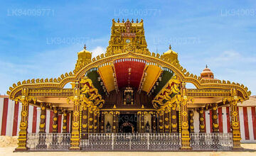
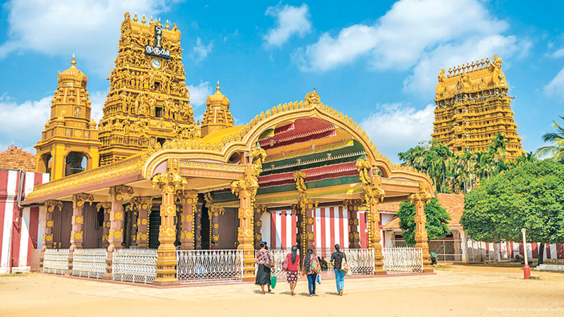
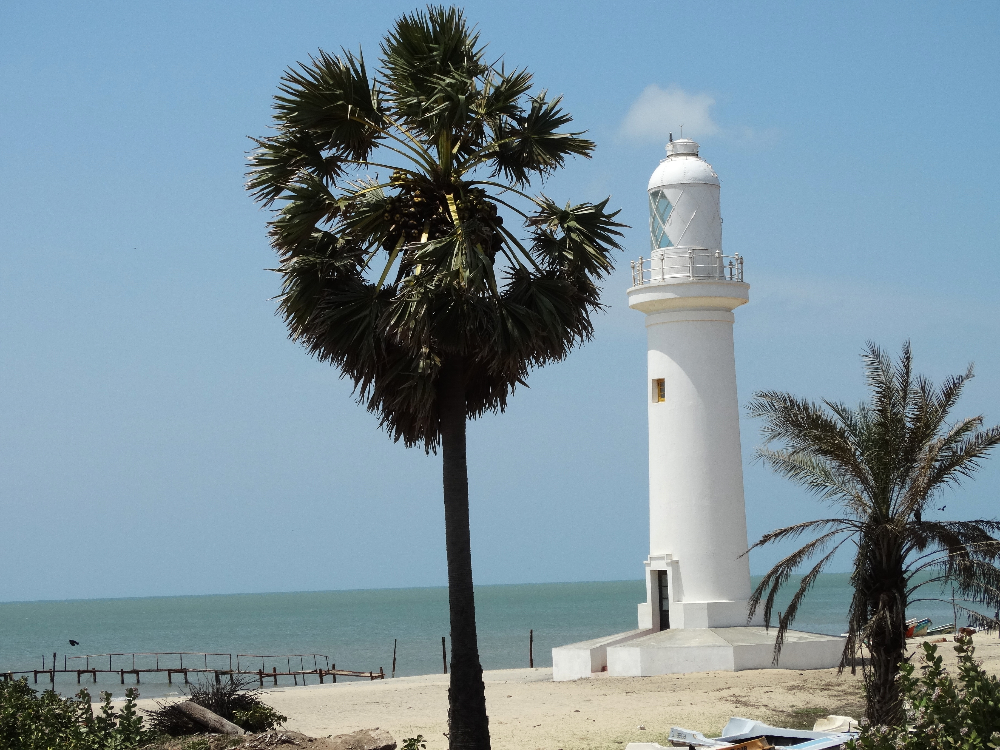
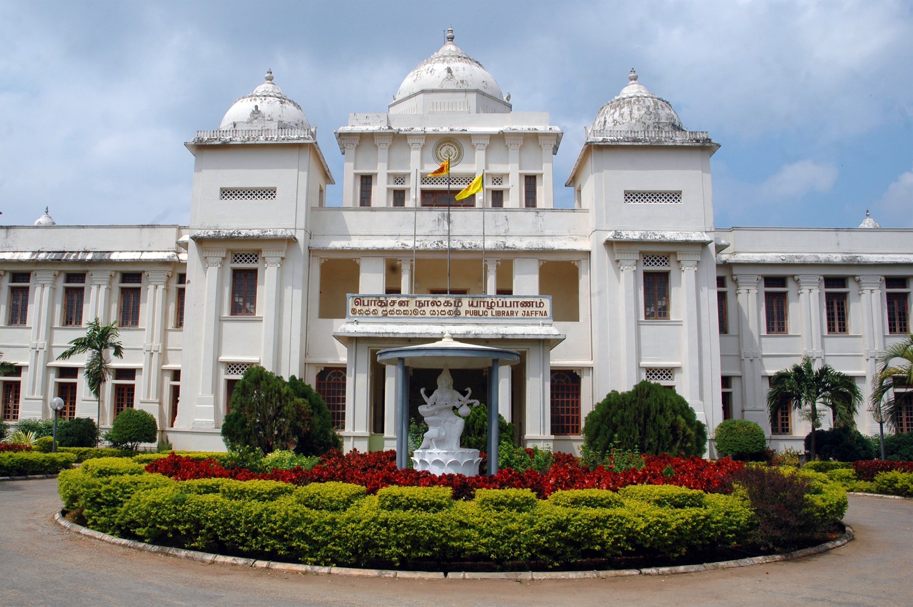
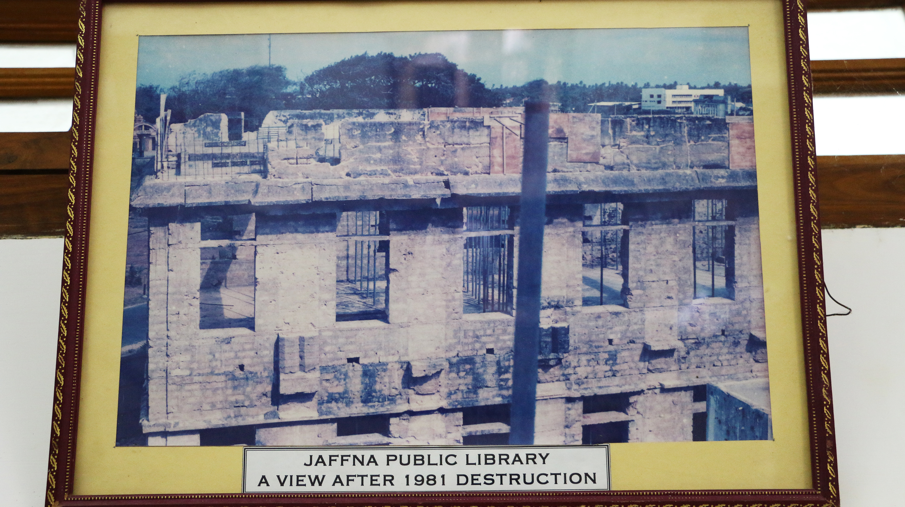
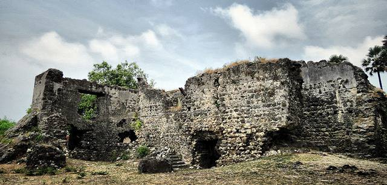
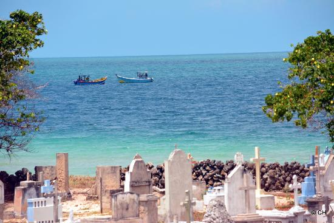

The Northern Province is one of the nine provinces of Sri Lanka, the first level administrative division of the country.
The provinces have existed since the 19th century but did not have any legal status until 1987 when the 13th Amendment to the
Constitution of Sri Lanka established provincial councils. Between 1988 and 2006 the province was temporarily merged with the
Eastern Province to form the North Eastern Province. The capital of the province is Jaffna. T
he majority of the Sri Lankan Civil War was played out in this province.
1. Nallur Kovil

Nallur Kandaswamy Kovil is a significant Hindu temple, located in Nallur, Northern Province, Sri Lanka.
The presiding deity is Lord Murugan in the form of the holy 'Vel' in the Sanctum, the primary shrine, and in other forms, namely,
Shanmugar, Muthukumaraswami, Valli Kaanthar with consorts Valli and
Deivayanai, and Thandayuthapani, sans consorts in secondary shrines in the temple.
The original, Kandaswamy Temple was founded in 948 ad. According to the Yalpana Vaipava Malai, the temple was developed at the site in the
13th century by Buwanika Bahu, a minister to the King of Kotte. Sapumal Kumaraya (also known as Chempaha Perumal in Tamil),
who ruled the Jaffna kingdom on behalf of the Kotte kingdom is credited with building the third Nallur Kandaswamy temple.
Nallur served as the capital of the Jaffna kings, with the royal palace situated very close to the temple.
Nallur was built with four entrances with gates. There were two main roadways and four temples at the four gateways

The present rebuilt temple that exists now does not match their original locations which instead are occupied by churches erected by
the Portuguese.The center of the city was Muthirai Santhai (market place) and was surrounded by a square fortification around it.
There were courtly buildings for the kings, Brahmin priests, soldiers, and other service providers.
The old Kandaswamy temple functioned as a defensive fort with high walls.
In general, the city was laid out like the traditional temple town according to Hindu traditions.
Cankilian Thoppu, the facade of the palace of King Cankili II, can still be found in Nallur.
The third temple was destroyed by the Portuguese Catholic colonial Filipe de Oliveira in 1624 AD. The original kovil was located where
St. James' Church, Nallur is located today.
2. Mannar Island
Mannar is the main town of Mannar District, Northern Province, Sri Lanka. It is governed by an Urban Council. The town is located on
Mannar Island overlooking the Gulf of Mannar and is home to the historic Ketheeswaram temple.
Formerly the town was renowned as a center of pearl fishing, mentioned in the 2nd-century CE Periplus of the Erythraean Sea.
Mannar is known for its baobab trees and for its fort, built by the Portuguese in 1560 and taken by the Dutch in 1658 and rebuilt
its ramparts and bastions are intact, though the interior is largely destroyed.
Visually, the modern town is dominated by its churches, Hindu temples and mosques. The Catholic Church has a diocese headquartered in the
town. By rail the town is connected to the rest of Sri Lanka by the Mannar Line. It was occupied by LTTE during Sri Lankan Civil War b
etween 1983 and 2009.
Mannar Island is known for its sunny weather and ancient baobab trees, which are said to have been planted by Ara
b merchants visiting the island centuries ago. It was once at the center of the island’s prosperous pearling industry.

The island contains the main town of Mannar, and visitors can also head to Keeri Beach, the Talaimannar Lighthouse, the 700-year-old
Baobab Tree, and Mannar Fort. There’s plenty to visit, and Mannar Island is a must-see for those wishing to explore Sri Lanka’s
northern shores.
Mannar Island and all that it has to offer is best enjoyed between July and September, and between the months of December and February.
The weather in the northern parts of Sri Lanka can get extremely hot, so it is best avoided during the summer period between April and
June.
The island consists of approximately 125 square kilometers of land, the majority of which features large expanses of white sand and palm t
rees. There are also forests of palmyra palm trees that house several tribes of monkeys near the beach; visitors should therefore take
caution not to leave food lying around.
3. Jaffna Public Library

Jaffna is the capital city of the Northern Province of Sri Lanka. It is the administrative headquarters of the Jaffna District located on a
peninsula of the same name. With a population of 88,138 in 2012, Jaffna is Sri Lanka's 12th most populous city.
Jaffna is approximately six miles (9.7 kilometres) from Kandarodai which served as an emporium in the Jaffna peninsula from classical
antiquity. Jaffna's suburb Nallur, served as the capital of the four-century-long medieval Jaffna Kingdom.
Prior to the Sri Lankan Civil War, it was Sri Lanka's second most populous city after Colombo. T
he 1980s insurgent uprising led to extensive damage, expulsion of part of the population, and military occupation. S
ince the end of civil war in 2009, refugees and internally displaced people began returning to homes, while government a
nd private sector reconstruction started taking place. Historically, Jaffna has been a contested city. It was made int
o a colonial port town during the Portuguese occupation of the Jaffna peninsula in 1619 who lost it to the Dutch, only to l
ose it to the British in 1796.

During the civil war, the rebel Liberation Tigers of Tamil Eelam (LTTE) occupied Jaffna in 1986. The Indian Peace Keeping Force
(IPKF) briefly occupied the city in 1987. The LTTE again occupied the city from 1989 until 1995, when the Sri Lankan Army regaine control.
The majority of the city's population are Sri Lankan Tamils with a significant number of Sri Lankan Moors, Indian Tamils and other
ethnic groups present in the city prior to the civil war. Most Sri Lankan Tamils are Hindus followed by Christians,
Muslims and a small Buddhist minority. The city is home to number of educational institutions established during the
colonial and post-colonial period. It also has number of commercial institutions, minor industrial units, banks, hotels and
other government institutions. It is home to many historical sites such as the popular Jaffna library that was burnt down and
rebuilt and the Jaffna fort which was rebuilt during the Dutch colonial period.
4. Neduntheevu (Delft Island)

Neduntheevu or Nedunthivu (also known by its Dutch name Delft) is an island in the Palk Strait, northern Sri Lanka.
This island is named as Delft in the Admiralty Chart unlike the other islands, whose names are Tamil. The island's area i
s 50 km2 and it is roughly oval-shaped. Its length is 8 km and its maximum width about 6 km.
Neduntheevu is a flat island surrounded by shallow waters and beaches of coral chunks and sand. It is home to a smal
l population of Tamil people, mostly living in quiet compounds close to the northern coast. The vegetation is of a
semi-arid tropical type, with palmyra palms, dry shrubs and grasses that grow on the pale grey porous coralline soil.
Papayas and bananas grow close to the local people's homes. In the western coast of the island there are remains of a
000-year-old temple[citation needed] built by the Chola Dynasty,[citation needed] as well as the ruins of a Dutch colonial fort.
The water is slightly brackish, and it is taken from shallow wells using buckets made from palmyra palm leaves.

A naval battle was fought off the coast of the island in 2008 during the Sri-Lankan Civil War. There are feral ponies on the island,
descendants of forebears abandoned there in the Dutch period.
The island was named after the Dutch city of Delft by Rijckloff van Goens. He named the eight most important islands after Dutch ci
ties.
The marine archaeologists from the Maritime Archaeology Unit (MAU) of Central Cultural Fund (CCF) established in Galle in their
archaeological explorations carried out in Delft Island in August 2017 discovered two Tamil inscriptions dated to 14-15 century
and one Sinhala Prakrit inscription dated to 1st or 2nd century that have not been hither to revealed.
Neduntheevu is a flat island surrounded by shallow waters and beaches of coral chunks and sand. It is home to a small population of
Tamil people, mostly living in quiet compounds close to the northern coast. The vegetation is of a semi-arid tropical type, with
palmyra palms, dry shrubs and grasses that grow on the pale grey porous coralline soil.
 Mannar is the main town of Mannar District, Northern Province, Sri Lanka. It is governed by an Urban Council. The town is located on
Mannar Island overlooking the Gulf of Mannar and is home to the historic Ketheeswaram temple.
Formerly the town was renowned as a center of pearl fishing, mentioned in the 2nd-century CE Periplus of the Erythraean Sea.
Mannar is known for its baobab trees and for its fort, built by the Portuguese in 1560 and taken by the Dutch in 1658 and rebuilt
its ramparts and bastions are intact, though the interior is largely destroyed.
Mannar is the main town of Mannar District, Northern Province, Sri Lanka. It is governed by an Urban Council. The town is located on
Mannar Island overlooking the Gulf of Mannar and is home to the historic Ketheeswaram temple.
Formerly the town was renowned as a center of pearl fishing, mentioned in the 2nd-century CE Periplus of the Erythraean Sea.
Mannar is known for its baobab trees and for its fort, built by the Portuguese in 1560 and taken by the Dutch in 1658 and rebuilt
its ramparts and bastions are intact, though the interior is largely destroyed.